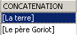
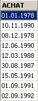
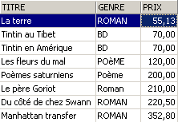
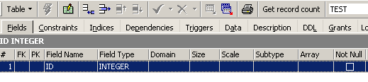
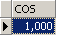

4. SQL 表达式
4.1. 简介
在大多数 SQL 命令中，都可以使用表达式。以 SELECT 命令为例：
SELECT 表达式1, 表达式2, ... FROM 表 WHERE 表达式 |
SELECT 语句会筛选出满足 expression 条件的行，并显示每行中 expr1、expr2、... 的值。
示例
在本节中，我们将解释表达式的概念。一个基本表达式的形式为：
操作数1 运算符 操作数2
或
函数(参数)
示例
在表达式中 GENRE = 'ROMAN'
- GENRE 是操作数1
- 'ROMAN' 是操作数2
- = 是运算符
在表达式 upper(genre) 中
- upper 是一个函数
- 'genre' 是该函数的参数。
我们将首先介绍包含运算符的表达式，然后介绍 Firebird 中可用的函数。
4.2. 包含运算符的表达式
我们将根据操作数的类型对包含运算符的表达式进行分类：
- 数值
- 字符串
- 日期
- 布尔或逻辑
4.2.1. 包含数值操作数的表达式
4.2.1.1. 运算符列表
设 number1、number2 和 number3 均为数字。可以使用以下运算符：
关系运算符
: number1 大于 number2 | |
: number1 大于或等于 number2 | |
: number1 小于 number2 | |
: number1 小于或等于 number2 | |
: number1 等于 number2 | |
: number1 不等于 number2 | |
: 与 | |
: number1 位于 [number2, number3] 范围内 | |
: number1 属于数字列表 | |
: number1 没有值 | |
: number1 有一个值 |
算术运算符
: 加法 | |
: 减法 | |
: 乘法 | |
: 除法 |
4.2.1.2. 关系运算符
关系运算符关系表达式表示一种关系，该关系要么为真，要么为假。因此，此类表达式的结果是一个布尔值或逻辑值。
示例：


4.2.1.3. 算术运算符
我们对算术表达式已经很熟悉。它们表示对数值数据进行的计算。我们已经遇到过此类表达式：假设存储在 BIBLIO 文件记录中的价格是税前价格。我们希望显示每本书的含税价格，增值税税率为 18.6%：
如果价格需要上涨 3%，则命令将变为
一个表达式可以包含多个算术运算符，以及函数和括号。这些元素将按照不同的优先级进行处理：
1 | <---- 最高优先级 | |
2 | ||
3 | ||
4 | <---- 优先级较低 |
当表达式中出现两个优先级相同的运算符时，最左边的运算符优先计算。
示例
表达式 PRICE*RATE+TAXES 将被计算为 (PRICE*RATE)+TAXES。这是因为乘法运算符优先。表达式 PRICE*RATE/100 将被计算为 (PRICE*RATE)/100。
4.2.2. 包含字符操作数的表达式
4.2.2.1. 运算符列表
可以使用以下运算符：
设 string1、string2、string3 和 string pattern 分别为
: string1 大于 string2 | |
: string1 大于或等于 string2 | |
: string1 小于 string2 | |
: string1 小于或等于 string2 | |
: string1 等于 string2 | |
: string1 不等于 string2 | |
: 相同 | |
: string1 位于 [string2, string3] 范围内 | |
: string1 属于字符串列表 | |
: string1 没有值 | |
: channel1 具有值 | |
: string1 匹配 pattern |
连接运算符
string1 || string2 ：将字符串2与字符串1连接
4.2.2.2. 关系运算符
使用 <、<= 等运算符比较字符串是什么意思？
每个字符都被编码为一个整数。比较两个字符时，实际上是在比较它们的整数编码。所使用的编码遵循字典的自然排序：
数字排在字母之前，大写字母排在小写字母之前。
4.2.2.3. 比较两个字符串
考虑关系 'CAT' < 'DOG'。它是真还是假？为了进行此比较，数据库管理系统（DBMS）会根据字符的整数编码，逐个字符地比较这两个字符串。一旦发现两个字符不同，则包含较小字符的字符串被视为小于另一个字符串。在我们的示例中，'CAT' 与 'DOG' 进行比较。我们得到以下连续结果：
经过这次最后的比较，字符串“CAT”被判定比字符串“DOG”短。因此，关系“CAT” < “DOG”为真。
现在让我们比较 'CHAT' 和 'chat'。
经过此比较，关系 'CHAT' < 'chat' 被判定为真。
示例


4.2.2.4. LIKE 运算符
LIKE 运算符的使用方法如下：字符串 LIKE 模式
如果字符串与模式匹配，则条件为真。模式是一个字符串，其中可能包含两个通配符：
表示任意字符序列 | |
表示任意单个字符 |
示例


4.2.2.5. 连接运算符

4.2.3. 包含日期类型操作数的表达式
设 date1、date2 和 date3 均为日期。可使用以下运算符：
关系运算符
当 date1 早于 date2 时为真 | |
当 date1 早于或等于 date2 时，该条件为真 | |
当 date1 晚于 date2 时，该条件为真 | |
当 date1 等于或晚于 date2 时，该条件为真 | |
当 date1 和 date2 完全相同时，该条件为真 | |
当 date1 和 date2 不同时，该条件为真。 | |
等同于 | |
当 date1 介于 date2 和 date3 之间时为真 | |
如果 date1 在日期列表中，则为真 | |
如果 date1 没有值，则为真 | |
如果 date1 有值，则为真 | |
如果 date1 匹配该模式，则为真 | |
算术运算符
: date1 与 date2 之间的天数 | |
: 满足 date1 - date2 = 该数字的 date2 | |
: 日期2，使得日期2 - 日期1 = 数值 |
示例



图书馆里的书有多旧？

4.2.4. 包含布尔操作数的表达式
请记住，布尔值或逻辑值有两种可能的取值：true 或 false。逻辑操作数通常是关系表达式的结果。
设 boolean1 和 boolean2 是两个布尔值。可能的运算符有三种，按优先级排序如下：
| 当 boolean1 和 boolean2 均为真时，该表达式为真。 |
| 当 boolean1 或 boolean2 其中一个为真时，结果为真。 |
| 其值为 boolean1 值的反值。 |
示例

我们正在查找价格在某个范围内的书籍：

反向搜索：

请注意运算符的优先级！
SQL> select titre,genre,prix from biblio
where genre='ROMAN' and prix>200 or prix<100
order by prix asc

使用括号来控制运算符的优先级：
SQL> select titre,genre,prix from biblio
where genre='ROMAN' and (prix>200 or prix<100)
order by prix asc

4.3. Firebird 的预定义函数
Firebird 提供了预定义函数。这些函数无法直接在 SQL 语句中使用。您必须先运行 SQL 脚本 <firebird>\UDF\ib_udf.sql，其中 <firebird> 指 Firebird 数据库管理系统的安装目录：

在 IBExpert 中，操作步骤如下：
- 我们通过 [Tools/Script Executive] 选项调用 [Script Executive] 工具：

- 打开该工具后，我们加载脚本 <firebird>\UDF\ib_udf.sql：

- 然后执行该脚本：

完成上述操作后，Firebird 的预定义函数即可在运行脚本时所连接的数据库中使用。要查看这些函数，只需转到数据库资源管理器，并点击已导入函数的该数据库对应的 [UDF] 节点：

以上是该数据库可用的函数。要测试这些函数，创建一个单行表会很方便。我们将其命名为 TEST：

并按以下方式定义（右键单击“表”/“新建表”）：
现在向该表中添加一行数据：


现在，让我们打开 SQL 编辑器（F12），并执行以下 SQL 语句：
该语句使用了预定义的 cos（余弦）函数。上述命令会针对 TEST 表中的每一行计算 cos(0)，实际上仅针对单行进行计算。因此，它仅显示 cos(0) 的值：

UDF（用户定义函数）是用户可以创建的函数，网络上可以找到各种UDF库。在此，我们仅介绍Firebird（2005）可下载版本中提供的一部分UDF。我们根据其参数的主要类型或其作用对它们进行分类：
- 具有数值参数的函数
- 具有字符串类型参数的函数
4.3.1. 具有数值参数的函数
| number 的绝对值 abs(-15) = 15 |
| 大于或等于该数的最小整数 ceil(15.7) = 16 |
| 小于或等于 number 的最大整数 floor(14.3) = 14 |
| number1 除以 number2 的整数除法商（商为整数） div(7,3)=2 |
| number1 除以 number2 的整数除法余数（商为整数） mod(7,3)=1 |
| 若 number < 0，则返回 -1 若 number=0，则返回 0 若 number > 0，则返回 +1 sign(-6) = -1 |
| 若 number >= 0，则取 number 的平方根 若 number < 0，则返回 -1 sqrt(16) = 4 |
4.3.2. 带字符串参数的函数
ascii_char(number) | ASCII 码 字符 编号 ascii_char(65) = 'A' |
lower(string) | 将字符串转换为小写 lower('INFO')='info' |
ltrim(string) | 左截取 - 删除字符串中文字前面的空格： ltrim(' kitten')='kitten' |
replace(string1, string2, string3) | 将字符串1中的字符串2替换为字符串3。 replace('猫和狗','猫','**')='**和**' |
rtrim(string1, string2) | 右截断 - 与 ltrim 相同，但作用于右侧 rtrim('cat ')='cat' |
substr(string, p, q) | 字符串从位置 p 开始到位置 q 结束的子字符串。 substr('kitten',3,5)='to' |
ascii_val(字符) | 字符的 ASCII 码 ascii_val('A')=65 |
strlen(字符串) | 字符串中的字符数 strlen('kitten')=6 |